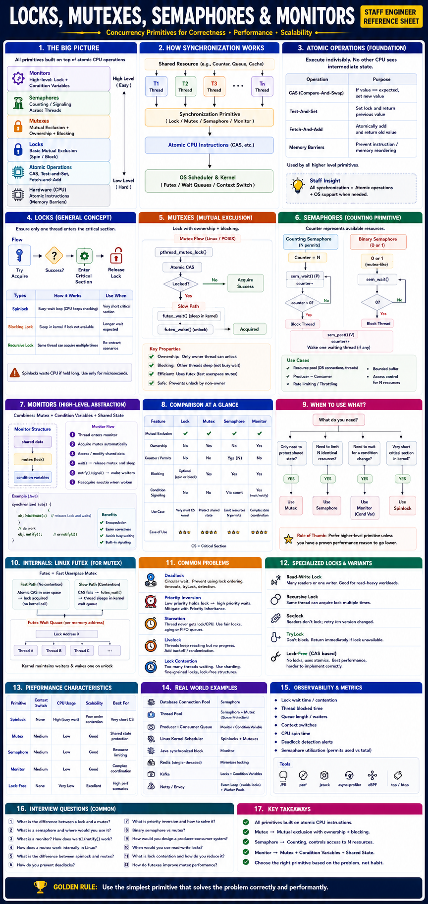

Staff Engineer Reference — Concurrency & OS Internals
Modern applications execute hundreds of thousands of concurrent operations across multiple CPU cores. Without synchronization: race conditions, data corruption, deadlocks, lost updates, inconsistent state.
A lock provides mutual exclusion — only one thread enters a critical section. Implemented using hardware-level atomic instructions (CAS, Test-And-Set, Fetch-And-Add).
Busy-waits in a loop without sleeping. No kernel involvement.
✅ Zero syscall overhead. ❌ Wastes CPU under contention.
Use for: kernel internals, < few µs critical sections.
Uses kernel to suspend waiting threads via futex.
✅ CPU-efficient under contention. ❌ syscall overhead.
Use for: longer critical sections.
Mutex = Lock with ownership + blocking. Only the owning thread can unlock it. Linux implements via futex (Fast Userspace Mutex).
State Machine
✅ Advantages
⚠️ Problems
Semaphore = Atomic counter. Unlike mutexes, multiple threads may hold it simultaneously (up to count N). No ownership — any thread may signal.
| Feature | Mutex | Semaphore |
|---|---|---|
| Ownership | ✅ Yes (only owner unlocks) | ❌ No |
| Count | 1 | N (configurable) |
| Resource Control | No | ✅ Yes |
| Mutual Exclusion | Yes | Only if count=1 |
Use cases:
Monitor = Mutex + Condition Variable + Shared State. Used by Java (synchronized), Python (with lock), C#.
✅ Advantages
⚠️ Problems
| Feature | Lock / Spinlock | Mutex | Semaphore | Monitor |
|---|---|---|---|---|
| Ownership | No | ✅ Yes | No | ✅ Yes |
| Blocking | Optional (spin/block) | Yes (futex) | Yes | Yes |
| Counting | No | No | ✅ Yes (N) | No |
| Condition Signaling | No | No | Via count | ✅ Yes (CV) |
| Context Switch | None | Moderate | Moderate | Moderate |
| CPU Under Contention | High (spin) | Low (block) | Low | Low |
| Best For | Short kernel paths | Shared mutable state | Resource limits | OOP synchronization |
Prevention: Lock ordering, timeouts, TryLock, deadlock detection, lock hierarchy.
High-priority thread waits for a low-priority thread holding the lock.
Fix: Priority Inheritance — kernel temporarily boosts lock holder's priority.
Many threads queued on one lock → high latency. Low-priority tasks never get lock.
Fix: Lock sharding, fine-grained locks, read-write locks, lock-free algorithms, fair locks with aging.
Threads continuously change state reacting to each other but never progress.
Fix: Randomized retry backoff, arbitration.
| Primitive | How It Works | Use Case |
|---|---|---|
| Read-Write Lock | Concurrent readers; exclusive writers | Mostly-read caches, configs |
| Seqlock | Readers check version before/after read; retry if version changed — no lock | Linux kernel timekeeping |
| Lock-Free (CAS) | Atomic compare-and-swap, no mutex | High-throughput queues, counters |
| Adaptive Mutex | Spins briefly, then blocks — best of both | JVM (HotSpot), Solaris |
| ReentrantLock (Java) | Mutex with fairness option + tryLock with timeout | Production Java concurrency |
| Scenario | Best Choice |
|---|---|
| Shared HashMap update | Mutex |
| Database connection pool | Semaphore |
| Producer-consumer queue | Monitor (mutex + condvar) |
| Kernel scheduler data structure | Spinlock |
| Read-heavy cache | Read-Write Lock |
| Lock-free counter | CAS / Atomic |
| Java OOP synchronization | synchronized / Monitor |
| System | Primitive Used |
|---|---|
Java synchronized | Monitor (mutex + condvar via futex) |
Java ReentrantLock | Mutex with fairness + tryLock |
| Linux Kernel Scheduler | Spinlock (disable preemption) |
| Database Connection Pool | Semaphore |
| Kafka | Locks + Condition Variables |
| Redis | Mostly single-threaded (minimal locking) |
| Netty | Event Loop (avoids locks) |
Key Metrics
| Metric | Indicates |
|---|---|
| Lock Wait Time | Contention |
| Context Switches/s | Excessive blocking |
| CPU Spin Time | Spinlock misuse |
| Deadlock Detection | Correctness issues |
| Queue Length | Resource pressure |
| Semaphore Utilization | Capacity planning |
Tools
Fundamentals
wait() release the mutex?Production
Staff-Level Design
| Level | Thinking Pattern |
|---|---|
| Junior | "I'll just add synchronized everywhere to be safe." |
| Senior | "I use synchronized for shared mutable state, a semaphore for the connection pool (bounded to 10), and condition variables for producer-consumer signaling. I always use while() around wait() for spurious wakeup safety." |
| Staff | "I select primitives based on workload: spinlocks for <µs kernel paths, mutexes for critical sections with variable wait times, semaphores for bounded resource permits, and monitors for state-based coordination. I know that all of these bottom out at CAS + futex + kernel wait queues. I diagnose lock contention using async-profiler off-CPU flamegraphs and Linux perf lock. When contention is the bottleneck, I eliminate it: partition state (lock striping), use read-write locks for mostly-read paths, convert synchronous blocking to async event loops, or switch to lock-free CAS-based structures (e.g., ConcurrentLinkedQueue). I also test under realistic concurrency — unit tests rarely expose contention." |
while not if around wait()).One of the most fundamental OS + concurrency topics that staff-level engineers must explain fluently — covering concepts, OS-level behavior, atomic operations, use cases, trade-offs, and when to apply each.
| Level | Mechanism | Purpose |
|---|---|---|
| 1 | Atomic operations (CAS, load/store fences) | Hardware-level synchronization |
| 2 | Locks / Spinlocks / Mutexes | Mutual exclusion — only one thread executes a critical section |
| 3 | Semaphores | Counting or signaling across threads or processes |
| 4 | Monitors / Condition Variables | High-level abstraction combining mutual exclusion + signaling |
| Mechanism | Goal | Common Use | Analogy |
|---|---|---|---|
| Lock / Spinlock | Protect a small critical section by spinning | Very short, CPU-only code paths | Guard at a door who won't sleep, just keeps checking |
| Mutex | Mutual exclusion with blocking (sleeps instead of spinning) | Long or unpredictable critical sections | Guard who sleeps until door opens |
| Semaphore | Control access to limited number of resources | Thread pool, producer-consumer, rate-limiter | Ticket counter giving limited passes |
| Monitor | Encapsulation of lock + condition variable + shared data | Object synchronization in OOP | A guarded room with a bell for signaling |
A lock ensures only one thread at a time can execute a critical section. Simplest form: spinlock — the thread repeatedly checks ("spins") until the lock becomes free.
| Aspect | Explanation | Staff-Level Insight |
|---|---|---|
| Definition | A lock ensures that only one thread executes a critical section at a time. | The most basic concurrency primitive for mutual exclusion. |
| Implementation Level | User-space + Hardware-level atomic operations (e.g., CAS, Test-and-Set, Fetch-and-Add). | OS provides kernel-assisted locks when needed (e.g., futex). |
| How it works | 1️⃣ Thread tries to acquire lock. 2️⃣ If unlocked, sets it atomically and proceeds. 3️⃣ If locked, it spins (busy wait) or blocks. | Low-level hardware synchronization used by higher primitives. |
| Types | Spinlock: Busy-wait loop. Blocking lock: Uses kernel to sleep until free. Recursive lock: Same thread can re-acquire. | Spinlocks are for very short critical sections (microseconds). |
| OS Interaction | Spinlocks entirely in user space; blocking locks may use kernel via futex or semaphores to block. | Avoid blocking locks in high-frequency paths — causes syscalls. |
| Trade-offs | Spinlocks waste CPU if held long; blocking locks save CPU but incur syscall latency. | Modern OS kernels (Linux) dynamically switch between both. |
| Example | Linux kernel spin_lock() uses atomic xchg; pthread_mutex_lock() uses futex for blocking. | Staff engineers tune between these based on contention pattern. |
OS-level internals
Test-And-Set, Compare-And-Swap).Example (C pseudocode — Spinlock)
__sync_lock_test_and_set() is an atomic CAS CPU instructionUse Cases
| Pros | Cons |
|---|---|
| No syscall overhead | Wastes CPU cycles if long wait |
| Fast for short critical sections | Not scalable under contention |
| Used in kernel fast paths | Dangerous if thread is preempted |
A mutex is a lock with ownership and blocking behavior: if a thread can't acquire it, it sleeps (via futex) instead of spinning.
| Aspect | Explanation | Staff-Level Insight |
|---|---|---|
| Definition | A mutex (mutual exclusion) allows only one thread to access a critical section and blocks others. | Think of it as a lock with ownership semantics. |
| Difference from generic lock | Adds ownership (only the owner can unlock) and usually supports blocking rather than spinning. | OS ensures correctness, prevents accidental unlock by others. |
| Typical flow | Thread tries pthread_mutex_lock(). Fast path: atomic CAS in user-space. Slow path: if locked, call into kernel via futex to sleep. Unlock: atomic release + futex_wake. | Futex = "fast userspace mutex." Avoids kernel syscalls when uncontended. |
| Kernel Internals (Linux) | Kernel keeps per-futex wait queues. futex_wait() blocks thread; futex_wake() wakes next. | Efficient hybrid of user-space atomics + kernel sleep. |
| State transitions | UNLOCKED → LOCKED → WAITING → WOKEN → UNLOCKED | Helps visualize race conditions and contention. |
| Advantages | Simple API · Kernel-assisted blocking (no busy wait) · Enforces ownership. | Default for most thread-safe structures. |
| Drawbacks | Kernel transitions under contention · Priority inversion possible | Avoid using in real-time paths without care. |
| Priority Inheritance | Temporarily raises priority of lock-holder if higher-priority thread is waiting. | Used in RTOS and Linux RT patches. |
Example (C / POSIX)
What happens under the hood
| Step | Kernel/Hardware Action |
|---|---|
| Thread 1 locks | Atomic CAS succeeds (user-space only) |
| Thread 2 locks | CAS fails → calls futex_wait() (kernel sleep) |
| Thread 1 unlocks | CAS releases → calls futex_wake() |
| Thread 2 wakes | Kernel moves thread to runqueue → resumes |
Use Cases
| Pros | Cons |
|---|---|
| Blocks instead of busy-wait | Syscall overhead under contention |
| Ownership prevents misuse | Priority inversion possible |
| Ideal for moderate contention | Slightly slower than spinlocks for tiny critical sections |
A semaphore is a synchronization primitive with a count. Unlike mutex, it doesn't have ownership — any thread can signal (release).
| Aspect | Explanation | Staff-Level Insight |
|---|---|---|
| Definition | A counter representing available resources. Threads wait() (P) to acquire and signal() (V) to release. | Used to control access to finite resources or signal between threads. |
| How it works | wait() decrements counter. If counter < 0 → thread blocks. signal() increments counter and wakes a waiter (if any). | Used for producer-consumer, rate limiting, or buffer slots. |
| Kernel Interaction | Maintains semaphore count + wait queue. Blocked threads sleep in kernel (down() syscall). | Kernel may use semaphores internally (e.g., process synchronization). |
| Advantages | Simple resource counting · Allows multiple concurrent users · Good for limiting concurrency. | Commonly used for connection or thread limiting. |
| Drawbacks | Harder to reason about (no ownership) · Can lead to deadlocks or leaks (if post() forgotten). | Use mutexes for critical sections; semaphores for permits. |
| Common Use Cases | Thread pool limiting (N worker threads) · Producer-consumer buffer control · Rate-limiting (token bucket style). | For system design, use semaphores for bounded concurrency. |
Example (Producer-Consumer, C)
| Operation | OS-level Behavior |
|---|---|
sem_wait() | Atomic decrement; if < 0 → kernel sleeps thread |
sem_post() | Atomic increment; wakes one waiting thread |
sem_init() | Initializes count and associated kernel semaphore structure |
| Wait Queue | Kernel keeps semaphore's wait queue for sleepers |
| Pros | Cons |
|---|---|
| Allows multiple concurrent users | Harder to reason about (no ownership) |
| Useful for rate-limiting | Misuse can cause leaks or deadlocks |
| Kernel-level counting | Slightly higher overhead than mutex |
A Monitor is a higher-level synchronization construct combining a mutex (mutual exclusion) + one or more condition variables (for signaling/waiting). Used widely in Java, Python, and C#.
| Aspect | Explanation | Staff-Level Insight |
|---|---|---|
| Definition | A monitor is a high-level concurrency construct combining a mutex + condition variables + shared state in one abstraction. | Used in OOP languages for encapsulated thread-safe classes. |
| Concept | Each object (monitor) has an implicit lock and condition variables for signaling. | E.g., Java's synchronized methods or Python's with Lock: blocks. |
| How it works | Thread enters monitor (acquires lock). Only one thread can be active. Thread may wait() on condition (releases lock, waits). Another thread notify()s, waking it. | Automatically manages locking/unlocking + signaling. |
| Implemented using | Underneath → mutex + condition variables (CVs use futex). | CV = wait queue + predicate variable. |
| Advantages | Clean encapsulation · Automatic mutual exclusion · Supports condition signaling. | Easier correctness — avoids explicit lock/unlock mismatch. |
| Drawbacks | Less flexible than raw locks · Can lead to convoying (waking multiple waiters). | In high-perf systems, use explicit locks for control. |
Example (Java-style Monitor)
| Step | Underlying Mechanism |
|---|---|
synchronized | Acquires an internal mutex (implemented via futex or pthread) |
wait() | Releases lock + adds thread to condition variable's wait queue (kernel sleep) |
notify() | Wakes one (or all) threads waiting on that condition (via futex_wake) |
| Resumed thread | Reacquires the mutex before continuing |
| Pros | Cons |
|---|---|
| Encapsulates locking and signaling logic | Slightly less explicit control |
| Easier to reason about | Can lead to spurious wakeups or notify storms |
| Built into many languages | Performance depends on JVM/runtime implementation |
| Feature | Lock | Mutex | Semaphore | Monitor |
|---|---|---|---|---|
| Purpose | Protect small critical section | Exclusive access | Limit concurrent access | Encapsulated synchronization |
| Ownership | None | ✅ Yes | No | ✅ Yes |
| Count | Binary | Binary | Counting (N) | Binary |
| Blocking | Optional (spin/block) | Yes | Yes | Yes |
| Kernel Involvement | None (spin) / futex (block) | Futex (sleep/wake) | Kernel wait queues | Futex via mutex + CV |
| Signal Mechanism | Unlock | Unlock | post()/signal() | notify()/wait() |
| Best for | Very short code paths | Shared mutable state | Resource limiting | High-level object locks |
| Layer | What happens |
|---|---|
| User space fast path | Try atomic CAS or atomic decrement without syscall. |
| Kernel slow path | If fails, call futex_wait() to block; kernel puts thread on wait queue associated with lock address. |
| Wakeup path | Unlock or post → atomic change + futex_wake() syscall → kernel dequeues one (or all) waiters and sets runnable. |
| Scheduler interaction | Kernel marks thread runnable → placed in per-CPU runqueue → context switch → user thread resumes. |
| Priority inversion | Kernel may boost owner thread priority (priority inheritance). |
| NUMA locality | Threads waiting on same lock in different NUMA nodes may suffer remote memory latency — critical for scaling. |
Advanced OS / Kernel Details
| Goal | Best Primitive | Reason |
|---|---|---|
| Fast mutual exclusion, short critical section | Spinlock | Avoid kernel syscall, minimal latency. |
| Mutual exclusion with long waits | Mutex | Blocks thread, saves CPU. |
| Limit concurrency to N resources | Semaphore | Counting control. |
| Object-oriented synchronization | Monitor | Encapsulates lock + condition variable. |
| Signaling between threads | Condition variable (part of monitor) | Allows wait + notify pattern. |
| Scenario | Recommended Mechanism | Why |
|---|---|---|
| Protect short shared counters | Spinlock or atomic CAS | Avoid syscall cost |
| Protect long shared operations | Mutex | Blocks efficiently |
| Limit number of concurrent tasks | Semaphore | Resource counter |
| Shared buffer with producers/consumers | Monitor | Simpler logic with wait/notify |
| Kernel driver or scheduler queue | Spinlock | Short atomic code path |
| Java multithreaded server | Monitor (synchronized/lock) | Simpler and safer abstraction |
| Scenario | Recommended Mechanism | Why |
|---|---|---|
| Shared in-memory cache (e.g., LRU eviction list) | Mutex | One writer at a time. |
| Thread pool queue (bounded capacity) | Semaphore | Prevent overflow, coordinate producers/consumers. |
| Shared counter updates (short critical path) | Spinlock or atomic CAS | Low latency, no blocking. |
| Message queue consumer/producer model | Monitor (mutex + condvar) | Wait/signal on full/empty conditions. |
| High-frequency kernel data structure | Spinlock | Kernel-space concurrency (atomic operations only). |
| Object | Real-world Equivalent |
|---|---|
| Lock / Spinlock | Bouncer checking ID but not leaving door — just keeps checking |
| Mutex | Door with key — only holder can unlock it |
| Semaphore | Parking lot with limited spots (N permits) |
| Monitor | Room with guard and bell — only one inside, others wait for a signal |
